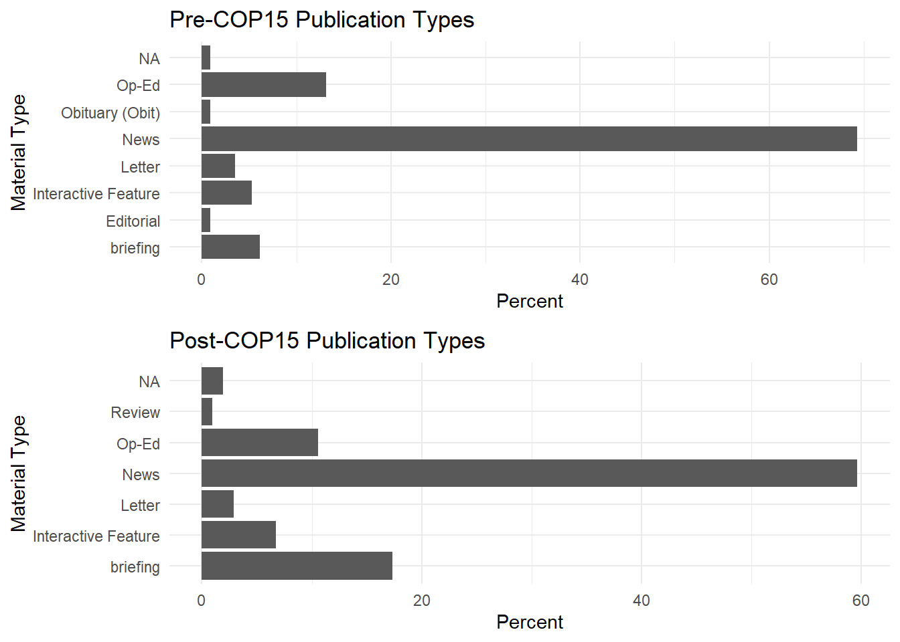
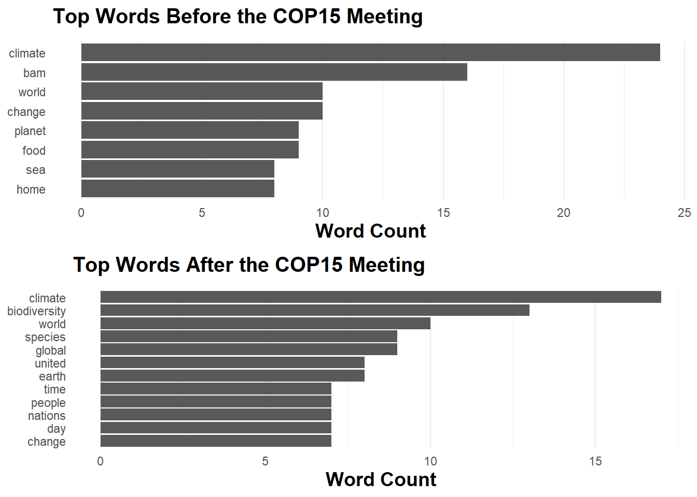
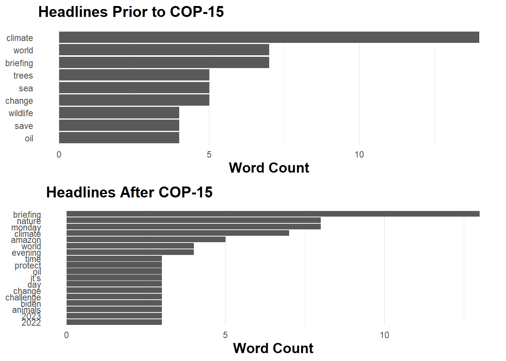

library(jsonlite) #convert results from API queries into R-friendly formats
library(tidyverse)
library(tidytext) #text data management and analysis
library(ggplot2) #plot word frequencies and publication datesIn this project I analyze the sentiment of biodiversity loss in recent New York Times articles. The COP15 United Nations Biodiversity Conference was in December 2022, so I am particularly interested to see if there has been a change in sentiment before and after this conference. I hope to see that this international conference has brought increased attention towards this subject. To compare, I separate the data into the 5 months prior to the conference, and the 5 months after.
Setting Up
The collection of articles were gathered from New York Times developer, via (<https://developer.nytimes.com/get-started>). I created an app with an Article Search to get an API key and used the {jsonlite} package to query the API. Follow the below code to import your own collection of documents, changing the terms and time period for your interest. This initial query may take a long time, but the code will update which page it is retrieving from the API.
API_KEY <- 'your token'
term1 <- "biodiversity"
term2 <- "&loss"
begin_date <- "20220701"
end_date <- "20230501"
# Link construction for the API
baseurl <- paste0("http://api.nytimes.com/svc/search/v2/articlesearch.json?q=",term1,term2,"&begin_date=",begin_date,"&end_date=",end_date,"&facet_filter=true&api-key=","NTKBHbsb6XFEkGymGumAiba7n3uBvs8V", sep="")
# Send the request, receive the response, and flatten
t <- fromJSON(baseurl, flatten = T)
t <- data.frame(t)
initialQuery <- fromJSON(baseurl)
maxPages <- round((initialQuery$response$meta$hits[1] / 10) - 1)
pages <- list()
for(i in 0:maxPages){
nytSearch <- fromJSON(paste0(baseurl, "&page=", i),
flatten = TRUE) |>
data.frame()
message("Retrieving page ", i)
pages[[i+1]] <- nytSearch
Sys.sleep(20)
}I ran into issues further along the code, and realized the documents did not have the same number of columns. After some sleuthing I realized some of the data frames were missing the column “response.docs.subsection_name”. This may not be an issue with your query, but the below code will resolve this if it is. The following step, which requires all data frames to have the same column names, is to rbind.
pages <- lapply(pages, function(df) {
if(ncol(df) == 32) {
df |> mutate("response.docs.subsection_name" = NA)
} else {
df
}
})
# Combine all the documents
biodiversitydf <- do.call("rbind", pages)I completed the above steps on my computer and saved the results, so here I’ll read in my own file to continue. I filter the data frame to before and after the COP-15 Conference in December 2020
biodiversitydf <- readRDS("nyt_biodiversity_df.rds")
# Need this version for editing, above for knitting
#biodiversitydf <- readRDS("posts/2023-05-11-text-analysis/nyt_biodiversity_df.rds")
# Filter by the publication date
Pre_COP15 <- biodiversitydf |>
filter(as.Date(response.docs.pub_date) < as.Date("2022-12-7"))
Post_COP15 <- biodiversitydf |>
filter(as.Date(response.docs.pub_date) > as.Date("2022-12-7"))Exploration
First we can review the different types of materials/publications that are covering Biodiversity Loss. In both cases, we see it’s news coverage mostly covering this topic. This means those who do not follow the news, or get most of their information through magazines and social media, are not exposed to this information.
Code
# article type
post_pubs <- Post_COP15 %>%
group_by(response.docs.type_of_material) %>%
summarize(count=n()) %>%
mutate(percent = (count / sum(count))*100) %>%
ggplot() +
geom_bar(aes(y=percent, x=response.docs.type_of_material), stat = "identity") + coord_flip() +
theme_minimal() +
labs(x = "Material Type", y = "Percent", title = "Post-COP15 Publication Types") +
scale_fill_discrete(name = "Types of Material") +
theme(legend.position = "none")
pre_pubs <- Pre_COP15 %>%
group_by(response.docs.type_of_material) %>%
summarize(count=n()) %>%
mutate(percent = (count / sum(count))*100) %>%
ggplot() +
geom_bar(aes(y=percent, x=response.docs.type_of_material), stat = "identity") + coord_flip() +
theme_minimal() +
labs(x = "Material Type", y = "Percent", title = "Pre-COP15 Publication Types") +
theme(legend.position = "none")
gridExtra::grid.arrange(pre_pubs, post_pubs)
Next I explore the sentiment by pulling out paragraphs. The sixth column is called “response.doc.lead_paragraph” which has the paragraph text saved. This next step pulls out each word in the paragraph column, calling the words tokens and putting each in their own row.
pre_paragraph <- names(Pre_COP15)[6]
pre_paragraph_tokenized <- Pre_COP15 |>
unnest_tokens(word, pre_paragraph)
# Explore word column
head(pre_paragraph_tokenized[,"word"])[1] "nashville" "as" "a" "young" "college" "student" post_paragraph <- names(Post_COP15)[6] #
post_paragraph_tokenized <- Post_COP15 |>
unnest_tokens(word, post_paragraph)
# Explore word column
head(post_paragraph_tokenized[,"word"])[1] "to" "learn" "more" "about" "humans" "a" There is now a column called “word” that has each word from each document. There are a lot of words that build sentences without having stand-alone meaning that would be useful for this context. So next we are going to remove what’s called “stop words”. This vector of words is available through the package {tidytexts}. An anti-join is used to remove any rows that have these words.
Adding stop words and other transformations to the corpus:
pre_paragraph_tokenized <- pre_paragraph_tokenized |>
anti_join(stop_words)
post_paragraph_tokenized <- post_paragraph_tokenized |>
anti_join(stop_words)Word frequencies:
pre_graph_paragraph <- pre_paragraph_tokenized |>
count(word, sort = TRUE) |>
filter(n > 7) |>
mutate(word = reorder(word, n)) |>
ggplot(aes(n, word)) +
geom_col() +
labs(x = "Word Count", y = NULL, title = "Top Words Before the COP15 Meeting") +
theme_minimal() +
theme(plot.title = element_text(size = 15, face = "bold", margin = margin(b = 10)),
axis.title = element_text(size = 14, face = "bold"),
panel.grid.major.y = element_blank(),
panel.grid.minor.y = element_blank())
post_graph_paragraph <- post_paragraph_tokenized |>
count(word, sort = TRUE) |>
filter(n > 6) |>
mutate(word = reorder(word, n)) |>
ggplot(aes(n, word)) +
geom_col() +
labs(x = "Word Count", y = NULL, title = "Top Words After the COP15 Meeting") +
theme_minimal() +
theme(plot.title = element_text(size = 15, face = "bold", margin = margin(b = 10)),
axis.title = element_text(size = 14, face = "bold"),
panel.grid.major.y = element_blank(),
panel.grid.minor.y = element_blank())
gridExtra::grid.arrange(pre_graph_paragraph, post_graph_paragraph)
I want to explore the headlines, as the words in these can catch attention and direct feelings and interest in the article. The 20th column is “response.docs.headline.main” and we are going to repeat the stop words again.
pre_headline <- names(Pre_COP15)[20]
pre_headline_tokenized <- Pre_COP15 |>
unnest_tokens(word, pre_headline)
pre_headline_tokenized <- pre_headline_tokenized |>
anti_join(stop_words)Joining with `by = join_by(word)`post_headline <- names(Post_COP15)[20]
post_headline_tokenized <- Post_COP15 |>
unnest_tokens(word, post_headline)
post_headline_tokenized <- post_headline_tokenized |>
anti_join(stop_words)Joining with `by = join_by(word)`pre_graph_headline <- pre_headline_tokenized |>
count(word, sort = TRUE) |>
filter(n > 3) |>
mutate(word = reorder(word, n)) |>
ggplot(aes(n, word)) +
geom_col() +
labs(x = "Word Count", y = NULL, title = "Headlines Prior to COP-15") +
theme_minimal() +
theme(plot.title = element_text(size = 15, face = "bold", margin = margin(b = 10)),
axis.title = element_text(size = 14, face = "bold"),
panel.grid.major.y = element_blank(),
panel.grid.minor.y = element_blank())
post_graph_headline <- post_headline_tokenized |>
count(word, sort = TRUE) |>
filter(n > 2) |>
mutate(word = reorder(word, n)) |>
ggplot(aes(n, word)) +
geom_col() +
labs(x = "Word Count", y = NULL, title = "Headlines After COP-15") +
theme_minimal() +
theme(plot.title = element_text(size = 15, face = "bold", margin = margin(b = 10)),
axis.title = element_text(size = 14, face = "bold"),
panel.grid.major.y = element_blank(),
panel.grid.minor.y = element_blank())
gridExtra::grid.arrange(pre_graph_headline, post_graph_headline)
Sentiment
Now we will take the previous exploration and further analyze for sentiment in the text. I begin with taking the tokenized words from leading paragraph, already have separated out stop words previously. Using the sentiments from bing, I am adding a numeric binary value 0/1 to the words for positive/negative connotation.
bing_sent <- get_sentiments('bing')
pre_sent_words <- pre_paragraph_tokenized |>
inner_join(bing_sent, by = "word") |> # inner join sentiment words
mutate(sent_num = case_when( # turn sentiment into numerical form
sentiment == 'negative' ~ -1,
sentiment == 'positive' ~ 1
) )
post_sent_words <- post_paragraph_tokenized |>
inner_join(bing_sent, by = "word") |> # inner join sentiment words
mutate(sent_num = case_when( # turn sentiment into numerical form
sentiment == 'negative' ~ -1,
sentiment == 'positive' ~ 1
) )Citation
BibTeX citation:
@online{dale2023,
author = {Dale, Erica},
title = {Text and {Sentiment} {Analysis}},
date = {2023-05-11},
url = {http://ericamarie9016.github.io/2023-05-11-text-analysis},
langid = {en}
}
For attribution, please cite this work as:
Dale, Erica. 2023. “Text and Sentiment Analysis.” May 11,
2023. http://ericamarie9016.github.io/2023-05-11-text-analysis.